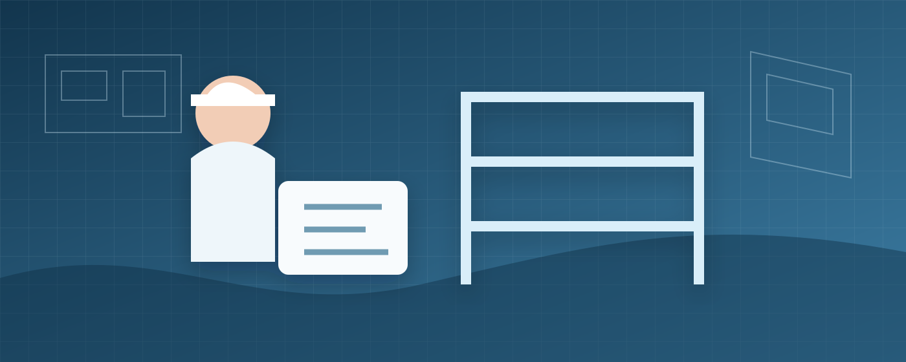

Acompanhamento e administração de obras: qual é a diferença

Muitos problemas de obra não acontecem por falta de conhecimento técnico, mas porque ninguém sabia claramente quem deveria decidir, conferir, comprar, medir ou autorizar. A diferença entre acompanhamento técnico e administração de obra está justamente no nível de participação do profissional na rotina da execução.
Visita técnica pontual não é acompanhamento contínuo
Uma visita pode ser contratada para avaliar uma etapa específica: conferir uma concretagem, analisar impermeabilização, verificar uma dúvida do empreiteiro ou inspecionar um serviço antes de ser fechado. Ela resolve uma pergunta delimitada.
No acompanhamento, existe uma sequência de visitas e verificações ao longo do tempo. O profissional conhece o projeto, acompanha etapas previamente definidas, registra orientações e ajuda o cliente a manter a execução alinhada com a documentação técnica.
Administração envolve uma camada adicional de gestão
Na administração, o escopo pode incluir atividades que ultrapassam a conferência técnica: planejamento das etapas, contato com fornecedores, cotações, controle de pedidos, medições, organização de cronograma, gestão de alterações e coordenação entre equipes.
Isso não significa que toda administração inclua tudo. O contrato deve listar com precisão quais atividades serão assumidas. “Administrar a obra” é uma expressão ampla demais para ficar sem definição.
| Atividade | Acompanhamento | Administração |
|---|---|---|
| Verificar execução conforme projeto | Frequentemente incluído | Frequentemente incluído |
| Visitas programadas | Sim, conforme contrato | Sim, normalmente com maior integração à rotina |
| Cotação e organização de compras | Pode não fazer parte | Pode fazer parte do escopo |
| Medição de empreiteiros | Somente se contratado | Comum em escopos de gestão |
| Atualização de cronograma | Pode ser simplificada | Normalmente mais detalhada |
| Coordenação de fornecedores | Limitada | Pode ser uma responsabilidade central |
O projeto é a referência; o acompanhamento não o substitui
Não é eficiente contratar um engenheiro para “decidir tudo na obra” quando as decisões poderiam ter sido documentadas antes. O acompanhamento funciona melhor quando existe projeto suficiente para comparar o executado com o previsto.
Quando aparece uma alteração necessária, a equipe deve registrar a mudança, avaliar impactos e atualizar a documentação pertinente. Decisões orais acumuladas são uma fonte comum de divergência entre cliente, projetista e executor.
O que vale registrar em cada visita
- data e etapa em execução;
- serviços verificados;
- não conformidades ou dúvidas encontradas;
- orientações fornecidas;
- fotografias relevantes;
- pendências e responsáveis;
- decisões que alteram projeto, custo ou prazo.
Um registro simples e consistente ajuda a recuperar o histórico da obra quando, semanas depois, surge uma dúvida sobre o que foi combinado.
Compras e medições merecem regras claras
Quando a administração inclui compras, é importante definir limites de aprovação. O profissional pode cotar e recomendar, enquanto o cliente autoriza. Ou pode existir uma faixa de valor previamente aprovada. O mesmo vale para medições de empreiteiros: critérios de avanço físico e condições de pagamento precisam estar alinhados ao contrato.
Sem esse processo, o cliente pode pagar por etapas incompletas ou descobrir tarde que materiais essenciais não foram comprados no prazo.
Como o cronograma ajuda de verdade
Um cronograma não serve apenas para colocar uma data final. Ele mostra dependências. A impermeabilização precisa estar concluída antes de certos acabamentos; instalações embutidas devem ser verificadas antes do fechamento; esquadrias podem ter prazo longo de fabricação e precisam ser contratadas antes que a obra “chegue” nelas.
O valor da gestão está em antecipar essas relações, não apenas registrar atrasos depois que aconteceram.
Quem responde pela execução?
Responsabilidades técnicas, contratuais e trabalhistas dependem da forma de contratação e das atividades assumidas. Por isso, o escopo deve indicar quem fornece mão de obra, quem contrata subempreiteiros, quem compra materiais, quem emite documentos técnicos e quem toma decisões de alteração.
Vai começar uma obra?
Definir o modelo de gestão antes da mobilização evita que acompanhamento, administração e execução se misturem sem responsabilidades claras.
Leia também
- Projeto arquitetônico e estrutural integrados
- Reforma de apartamento: planejamento e responsabilidade técnica
Precisa de engenharia ou arquitetura em Sorocaba e região?
Conte o que está acontecendo no seu imóvel. O primeiro passo é definir corretamente o problema antes de escolher o serviço.